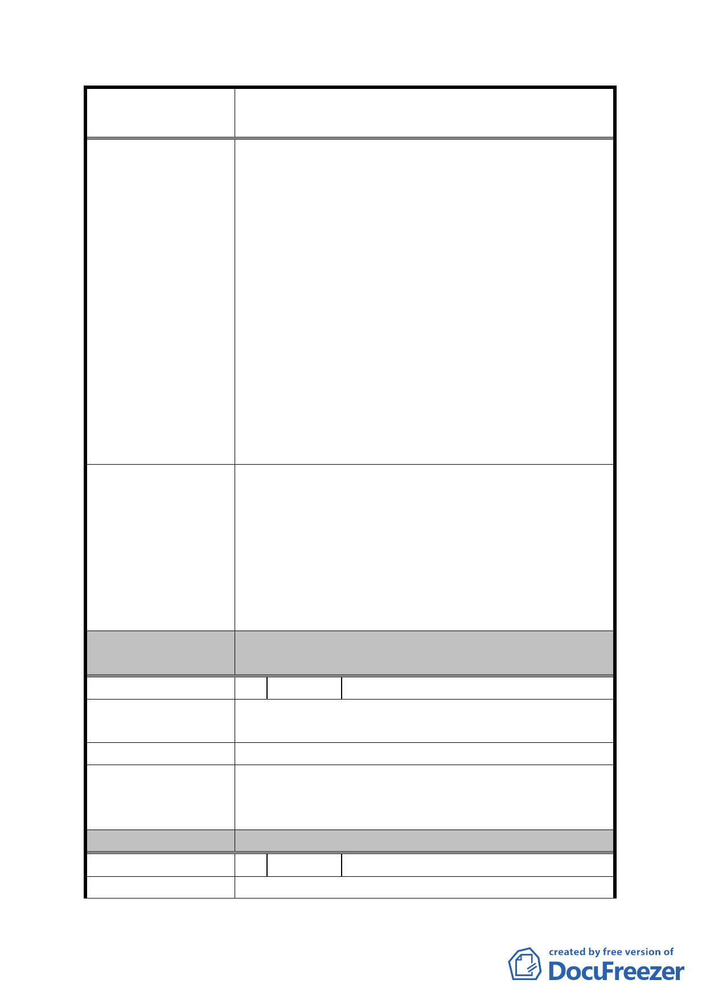

案名
變更臺北市內湖區蘆洲里附近部分工業區為
保護區、住宅區及道路用地主要計畫案
屋面積少掉一半以上，真是情何以堪。請以實情
思考，真以為臺北市所有居民解決多年來垃圾去
處之燙手山芋問題之功勞，專案簽核酌增「回饋
容積」，以彰政府德政。
5. 為解決本區窳陋問題及令南港經貿園區及內湖
科技園區可形成連結，使臺北市產業軸帶計畫之
美夢得以成真，吾等小市民意願配合市府政策，
但只有一小小請求，讓吾等弱勢小市民，未來尚
能居住於此（實在也沒有能力搬遷）。懇請市府
將如主旨所示精神轉以文字載明於主要計畫案
內，以為細部計畫之執行依據，以維護少數原土
地所有權人之原有權益（原公告容積率 200%，若
重劃後可分得土地為 55%，新容積率變為 200%÷
0.55＝364%；若重劃後可分得土地為 80%，新容
積率變為 200%÷0.80＝250%，再酌加回饋容積）。
一、 考量重劃 A 區及 B 區之街廓過大，造成部分裡
地無面臨道路無法開發以及目前區內道路寬
度不足等課題，規劃新闢 15 米東西向計畫道
發展局回應意見
路橫貫該區，以負担該地區未來開發衍生之龐
大交通需求。
二、 另建議提高容積率 1 節，因屬細部計畫範疇，
委員會決議
本局將納供參考。
一、 採納發展局意見。
二、 同編號 5 決議。
編 號 11 陳情人 劉蘇月里、劉淑貞等 12 人
陳
情
理
由
因本地號上之建物為新完成之建物且本建物均已出
租，並為本人等主要收入來源。
建 議 辦 法 不願意納入本次都市計畫變更。
如未妨礙重劃工程施工，後續可採原位置保留方式辦
發 展 局 回 應 意 見 理，惟須繳納差額地價並考量是否影響鄰地開發建
築。
委員會決議
同編號 3 決議一。
編 號 12 陳情人 周德輝
陳 情 理 由 本人於 98 年 4 月法拍取得該 2 筆用地(潭美段一小
- 24 -